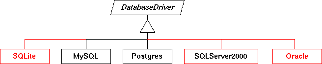

Provides for the database driver encapsulation.
Package Specification
The classes in this package provide an implementation for different
relational database management backend systems. The correct backend
system is dynamically instantiated, steered through properties.

Shown in black are implemented drivers. Red and black show non-working
implementations. In red are shown projected drivers that won't work at
all.
To provide an alternative implementation for an rDBMS, you need to
extend {@link org.griphyn.vdl.dbdriver.DatabaseDriver}.
Related Documentation
For overviews, tutorials, examples, guides, and tool documentation,
please see:
The following properties are understood by most if not all JDBC drivers.
Please note the GVDS-specific prefix. The asterisk should either be used
literally, meaning that the driver configuration applies to all
catalogs, or with the appropriate catalog abbreviation (vdc, ptc,
tc):
vds.db.*.driver- This property names the class that implements
the {@link org.griphyn.vdl.dbdriver.DatabaseDriver} for a specific
database engine. If the value is a identifier without periods, the prefix
org.griphyn.vdl.dbdrivers. is assumed. Otherwise, the
value denotes the complete Java path to the implementing class. Being
a class name, capitalization is important.
vds.db.*.driver.url- The URL under which a database may be access. This URL is often
specific to the database itself. However, usually it contains the
host and port (or file) to contact the rDBMS, and the name of the
database within the rDBMS.
vds.db.*.driver.user- This property specifies the name of the database user as which
to connect to the database.
vds.db.*.driver.password- The password property specifies the password of the database user.
@see org.griphyn.vdl.dbschema